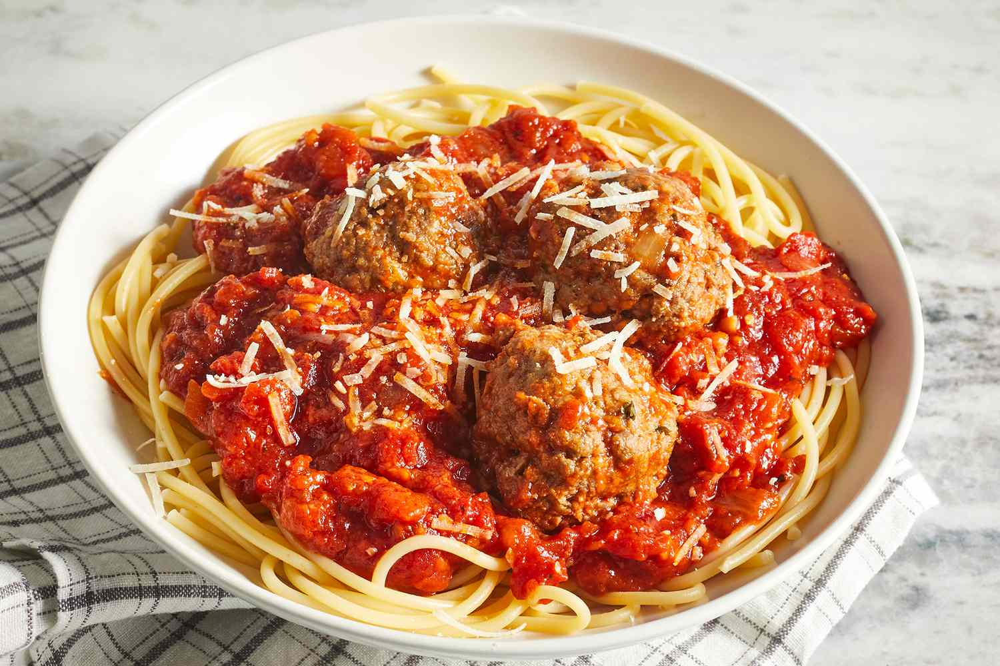

Spaghetti

Spaghetti all'Assassina – Was This the Original "To Die For" Recipe?
There's something a little bit suspicious about the origin story of this "to die for" pasta's name. Sure, a customer jokingly asking the chef if they're trying to "kill them" with this intensely flavored Spaghetti all'Assassina is sort of believable, but I've always felt like there was much more to the story. Hey, can we get a few of these true crime podcasters on the case?
Anyway, regardless of the real story (possibly involving the Medicis, and probably also the Opus Dei), this spicy, partially pan-fried spaghetti dish is as unusual as it is addictively delicious. As the head assassin, you get to decided exactly how spicy and charred this gets, but as I said in the video, the sweetness and acidity of the caramelized tomato sauce balances the heat from the chili flakes, so don't worry about using a heavy hand.
Ingredients
- ¼ cup olive oil
- 2 teaspoons red chili flakes, or to taste
- 6 ounces dry spaghetti
- alt to taste
- 1 tablespoon finely chopped parsley, for garnish
Steps
- Heat olive oil in a pot over medium heat. Add garlic and sizzle until it starts to turn golden and fragrant, about 1 minute. Stir in tomato puree, water, and salt. Bring to a simmer on medium-high. Once simmering, reduce to low heat and keep warm.
- Pour olive oil into a large non-stick skillet over medium-high heat, season with chili flakes and heat until chili flakes start to sizzle, for 1 minute. Add raw spaghetti and toss until well coated with chili oil. Pour in about 3 cups of tomato broth and, using tongs, move pasta from side to side to evenly distribute tomato broth. Cook, occasionally moving pasta from side to side with tongs, all facing the same direction, until most of the broth has been absorbed or evaporated, and the spaghetti starts frying in the pan.
- Turn spaghetti over with tongs, and evenly arrange in the pan. Keep cooking until the pasta starts to brown, and even lightly chars. Add about 2 more cups of tomato broth, and repeat the process. Continue cooking until the spaghetti is as charred as you like , and cooked to your desired doneness.
- More broth can be added at the end of the process for a saucier version, as shown in the video, or it can be served relatively dry.